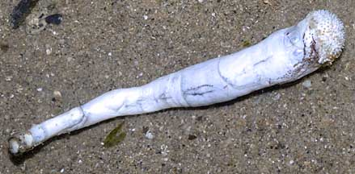
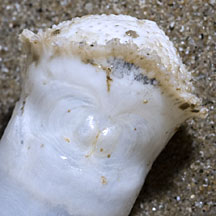
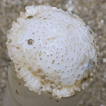
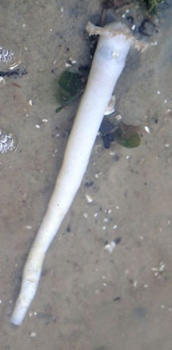
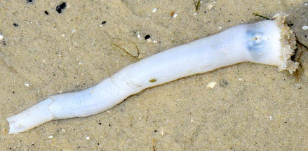

|
|
| bivalves text index | photo index |
| Phylum Mollusca > Class Bivalvia |
| Watering
pot shell Verpa penis Family Clavagellidae updated Jan 2020 Where seen? This strange animal is a bivalve that is tubular. It is sometimes seen among seagrasses on our Northern shores. It was previously known as Brechites penis. Features: About 12cm long.The broader end is perforated with tiny holes and this is usually buried in the ground with the narrow tip facing the surface. Siphons emerge from the narrow tip. The broader end resembles a watering can, hence its common name. There are two tiny oval shapes which is all that remains of the two valves of this strange bivalve. Status and threats: This animal is listed as "Presumed Nationally Extinct" on the Red List of threatened animals of Singapore. But a paper in Nature in Singapore (pdf) found that recent sightings suggest this animal is alive and well on our shores. |
|
 Changi, May 11 |
||
|
 Changi, Aug 11  |
| Watering pot shells on Singapore shores |
On wildsingapore
flickr
|
| Other sightings on Singapore shores |
 Chek Jawa, Dec 19 Photo shared by Liz Lim on facebook. |
|
 Chek Jawa, Jan 16 Photo shared by Loh Kok Sheng on facebook. |
Chek Jawa, Jan 23 Photo shared by Richard Kuah on facebook. |
| Family
Clavagellidae recorded for Singapore from Tan Siong Kiat and Henrietta P. M. Woo, 2010 Preliminary Checklist of The Molluscs of Singapore. ^from WORMS
|
|
Links
References
|